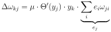
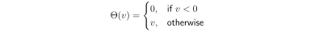
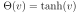

Next: References Up: Deep learning Previous: Multi-layer network: error backpropagation
The crucial question is if the introduction of the activation function changes the learning rule. Luckily not much. Looking at Eq. 10 it becomes directly clear that the chain rule is simply expanded by another term:
 |
(20) |
 is simply the derivative of the activation function . Consequently the
weight change at the output is now calculated as:
is simply the derivative of the activation function . Consequently the
weight change at the output is now calculated as:
|  | (21) |
|  | (22) |
Strictly, the activation function needs to be differentiable. However, it turned out that the one way rectifier (Rectifiying Linear Unit = ReLU) works extremely well (Fukushima, 1975):
|  | (23) |
 .
.